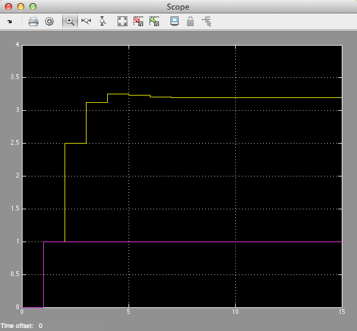

Worksheet 17
Contents
Worksheet 17#
To accompany Models of Discrete-Time Systems#
Colophon#
This worksheet can be downloaded as a PDF file. We will step through this worksheet in class.
An annotatable copy of the notes for this presentation will be distributed before the second class meeting as Worksheet 17 in the Week 9: Classroom Activities section of the Canvas site. I will also distribute a copy to your personal Worksheets section of the OneNote Class Notebook so that you can add your own notes using OneNote.
You are expected to have at least watched the video presentation of Models of Discrete-Time Systems of the notes before coming to class. If you haven’t watch it afterwards!
After class, the lecture recording and the annotated version of the worksheets will be made available through Canvas.
Agenda#
Discrete Time Systems (Notes)
Transfer Functions in the Z-Domain (Notes)
Discrete Time Systems#
In the lecture that introduced the z-transform we talked about the representation of a discrete-time (DT) system by the model shown below:

In this session, we want to explore the contents of the central block.
Example 5#
Karris Example 9.10:
The difference equation describing the input-output relationship of a DT system with zero initial conditions, is:
Compute:
The transfer function \(H(z)\)
The DT impulse response \(h[n]\)
The response \(y[n]\) when the input \(x[n]\) is the DT unit step \(u_0[n]\)
5.1. The transfer function#
5.2. The DT impulse response#
Start with:
MATLAB Solution#
clear all
cd matlab
pwd
format compact
See dtm_ex1_2.mlx. (Also available as dtm_ex1_2.m.)
The difference equation describing the input-output relationship of the DT system with zero initial conditions, is:
Transfer function#
Numerator \(z^2 + z\)
Nz = [1 1 0];
Denominator \(z^2 - 0.5 z + 0.125\)
Dz = [1 -0.5 0.125];
Poles and residues#
[r,p,k] = residue(Nz,Dz)
Impulse Response#
Hz = tf(Nz,Dz,-1)
hn = impulse(Hz, 15);
Plot the response#
stem([0:15], hn)
grid
title('Example 5 - Part 2')
xlabel('n')
ylabel('Impulse response h[n]')
Response as stepwise continuous y(t)#
impulse(Hz,15)
grid
title('Example 5 - Part 2 - As Analogue Signal')
xlabel('nTs [s]')
ylabel('Impulse response h(t)')
5.3. The DT step response#
Solved by inverse Z-transform.
MATLAB Solution#
See dtm_ex1_3.mlx. (Also available as dtm_ex1_3.m.)
open dtm_ex1_3
Results#

Modelling DT systems in MATLAB and Simulink#
We will consider some examples in class
MATLAB#
Code extracted from dtm_ex1_3.m:
Ts = 1;
z = tf('z', Ts);
Hz = (z^2 + z)/(z^2 - 0.5 * z + 0.125)
step(Hz)
grid
title('Example 1 - Part 3 - As Analogue Signal')
xlabel('nTs [s]')
ylabel('Step response y(t)')
axis([0,15,0,3.5])
Simulink Model#
See dtm.slx:

dtm
Results#

Converting Continuous Time Systems to Discrete Time Systems#
Continuous System Equivalents#
There is no digital system that uniquely represents a continuous system
This is because as we are sampling, we only have knowledge of signals being processed at the sampling instants, and need to reconstruct the inter-sample behaviour.
In practice, only a small number of transformations are used.
The derivation of these is beyond the scope of this module, but here we’ll demonstrate the ones that MATLAB provides in a function called
c2d
MATLAB c2d function#
Let’s see what the help function says:
help c2d
Example: Digital Butterworth Filter#
Design a 2nd-order butterworth low-pass anti-aliasing filter with transfer function \(H(s)\) for use in sampling music.
The cut-off frequency \(\omega_c = 20\)Â kHz and the filter should have an attenuation of at least \(-80\)Â dB in the stop band.
Choose a suitable sampling frequency for the audio signal and give the transfer function \(H(z)\) and an algorithm to implement \(h[n]\)
Solution#
See digi_butter.mlx.
First determine the cut-off frequency \(\omega_c\)
wc = 2*pi*20e3
From the lecture on filters, we know the 2nd-order butterworth filter has transfer function:
Substituting for \(\omega_c = 125.6637\times 10^3 \) this is …?
Hs = tf(wc^2,[1 wc*sqrt(2), wc^2])
Bode plot#
MATLAB:
bode(Hs,{1e4,1e8})
grid
Sampling Frequency#
From the bode diagram, the frequency roll-off is -40 dB/decade for frequencies \(\omega \gg \omega_c\). So, \(|H(j\omega)| = -80\)Â dB is approximately 2 decades above \(\omega_c\).
w_stop = 100*wc
To avoid aliasing, we should choose a sampling frequency twice this = ?
\(\omega_s = 2\times 12.6\times 10^6\)Â rad/s.
ws = 2 * w_stop
So
\(\omega_s = 25.133\times 10^6\)Â rad/s.
Sampling frequency (\(f_s\)) in Hz = ?
fs = ws/(2*pi)
Sampling time \(T_s = ?\)
\(T_s = 1/fs\;\mathrm{s}\)
Ts = 1/fs
Digital Butterworth#
zero-order-hold equivalent
Hz = c2d(Hs, Ts)
Step response#
step(Hz)
Algorithm#
From previous result:
Dividing top and bottom by \(z^2\) …
expanding out …
Inverse z-transform gives …
in algorithmic form (compute \(y[n]\) from past values of \(u\) and \(y\)) …
Block Diagram of the digital BW filter#

As Simulink Model#
open digifilter
Convert to code#
To implement:
/* Initialize */
Ts = 0.25e-06; /* more probably some fraction of clock speed */
ynm1 = 0; ynm2 = 0; unm1 = 0; unm2 = 0;
while (true) {
un = read_adc;
yn = 1.956*ynm1 - 0.9665*ynm2 + 479.1e-6*unm1 + 476.5e-6*unm2;
write_dac(yn);
/* store past values */
ynm2 = ynm1; ynm1 = yn;
unm2 = unm1; unm1 = un;
wait(Ts);
}